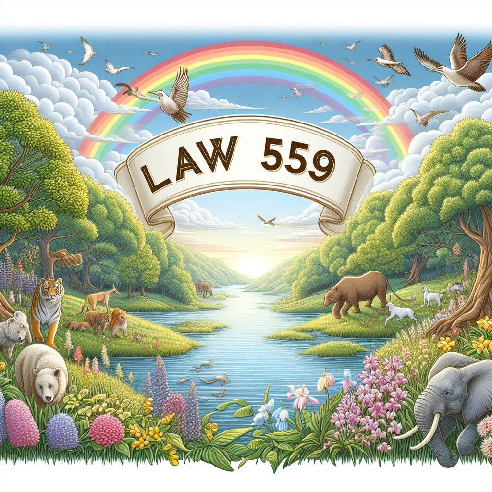

REGLAMENTO DE LA LEY GENERAL DEL MEDIO AMBIENTE Y LOS RECURSOS NATURALES
Gestión Ambiental:
El reglamento establece el marco legal para la gestión ambiental y el uso sostenible de los recursos naturales en Nicaragua. Define las funciones y responsabilidades de las instituciones, organismos y ciudadanos en la gestión ambiental, incluyendo la Comisión Nacional del Ambiente y la Procuraduría para la Defensa del Ambiente y los Recursos Naturales. También establece instrumentos de planificación y legislación ambiental, como la evaluación de impacto ambiental, el Sistema Nacional de Información Ambiental y la educación ambiental.
Recursos Naturales:
El reglamento regula el uso de la biodiversidad, el agua, los suelos, los bosques, la fauna silvestre y las áreas protegidas. Se establecen normas para la protección y el uso sostenible de estos recursos, incluyendo la protección de especies en peligro de extinción.
Calidad Ambiental:
El reglamento define las normas ambientales y de uso sostenible de los recursos naturales. Establece los procedimientos para la elaboración y oficialización de normas ambientales, el monitoreo de la calidad ambiental, las inspecciones ambientales y el manejo de las sustancias tóxicas.
Infracciones y Sanciones:
El reglamento define las infracciones a la Ley General del Medio Ambiente y los Recursos Naturales, así como las sanciones correspondientes. Se establecen los procedimientos administrativos sancionadores y los recursos administrativos contra las resoluciones administrativas en materia ambiental.
Ley 559 Ley Especial de Delitos Contra el Medio Ambiente.

La LEY No. 559 es una ley especial que tipifica como delitos contra el medio ambiente y los recursos naturales, las acciones u omisiones que violen o alteren las disposiciones relativas a la conservación, protección, manejo, defensa y mejoramiento del ambiente y los recursos naturales, así como, el establecimiento de la responsabilidad civil por daños y perjuicios ocasionados por las personas naturales o jurídicas que resulten con responsabilidad comprobada.
La ley establece una serie de delitos ambientales, como la contaminación, la deforestación, la caza y pesca ilegal, el tráfico de especies, el daño al patrimonio natural y cultural, entre otros, y las sanciones correspondientes, que pueden ser penas de prisión, multas, inhabilitación, decomiso, reparación o restauración. La ley también establece las autoridades competentes para conocer y tramitar las denuncias, como la fiscalía general de la República, el Poder Judicial y la Procuraduría para la Defensa del Ambiente y de los Recursos Naturales.
La ley tiene por objeto proteger el ambiente y los recursos naturales, que son patrimonio de todos los nicaragüenses, y garantizar un desarrollo humano sostenible, en armonía con la naturaleza.
• Convenios y tratados internacionales suscritos por Nicaragua en Materia del Medio Ambiente.
El Convenio de Diversidad Biológica (CDB)
Tiene como objetivo la conservación de la diversidad biológica, la utilización sostenible de sus componentes, y la participación justa y equitativa en los beneficios que se derivan de la utilización de los recursos genéticos. Nicaragua ratificó este convenio en 1995.
• La Convención de las Naciones Unidas de Lucha Contra la Desertificación y la Sequía (UNCCD)
Tiene como objetivo prevenir y revertir la degradación de las tierras áridas, semiáridas y subhúmedas secas, y mitigar los efectos de la sequía en los ecosistemas y las poblaciones que dependen de ellos. Nicaragua ratificó esta convención en 1997.
• El Convenio de Basilea
Sobre el Movimiento Transfronterizo de Desechos Peligrosos, que tiene como objetivo controlar y reducir los riesgos para la salud humana y el medio ambiente que plantea el transporte, la importación, la exportación y la eliminación de desechos peligrosos y otros desechos. Nicaragua ratificó este convenio en 1993.
• El Convenio de Rotterdam sobre el Consentimiento Informado Previo Aplicado a Ciertos Plaguicidas y Productos Químicos Peligrosos Objeto de Comercio Internacional
Tiene como objetivo promover la responsabilidad compartida y la cooperación en el comercio internacional de ciertos productos químicos peligrosos, y proteger la salud humana y el medio ambiente de los posibles daños causados por su uso. Nicaragua ratificó este convenio en 2001.
Convención RAMSAR.
La convención Ramsar es un acuerdo internacional que busca proteger y usar de manera sostenible los humedales, que son ecosistemas que tienen agua permanente o temporal, como lagos, ríos, pantanos, manglares, arrecifes, etc. Los humedales son importantes para la vida humana y la biodiversidad, porque proveen agua dulce, alimentos, refugio, regulación climática y otros beneficios. La convención Ramsar se firmó en 1971 en la ciudad de Ramsar, en Irán, y entró en vigor en 1975. Actualmente, tiene 172 países miembros, que se comprometen a conservar los humedales de importancia internacional, conocidos como sitios Ramsar, y a cooperar en temas relacionados con los humedales.